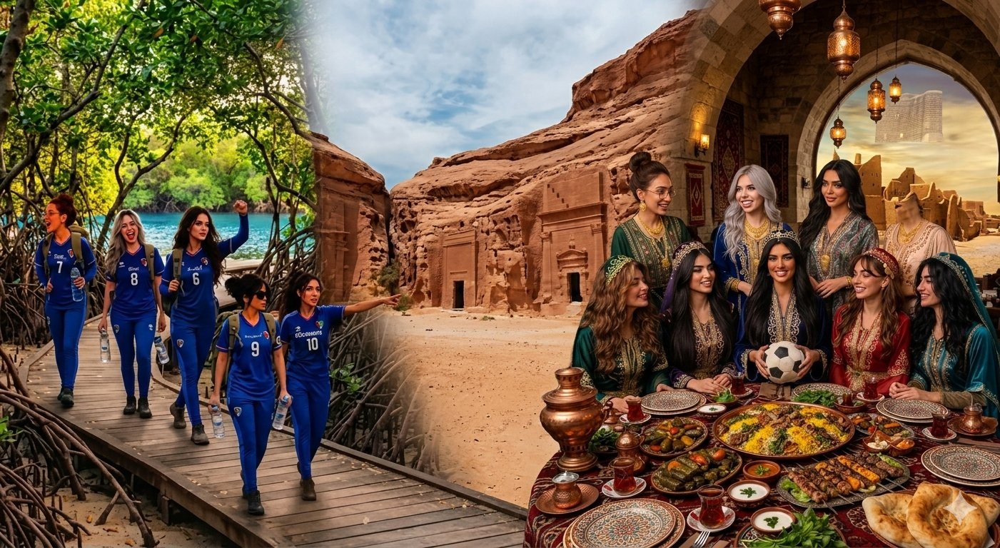
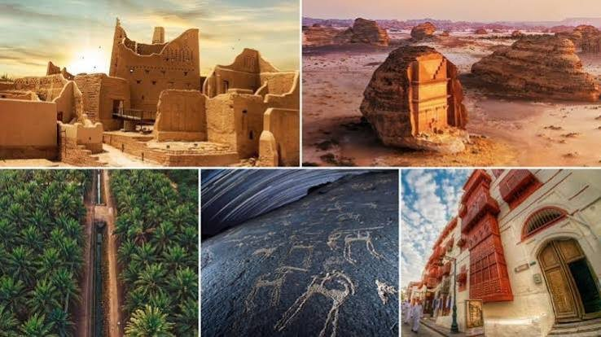
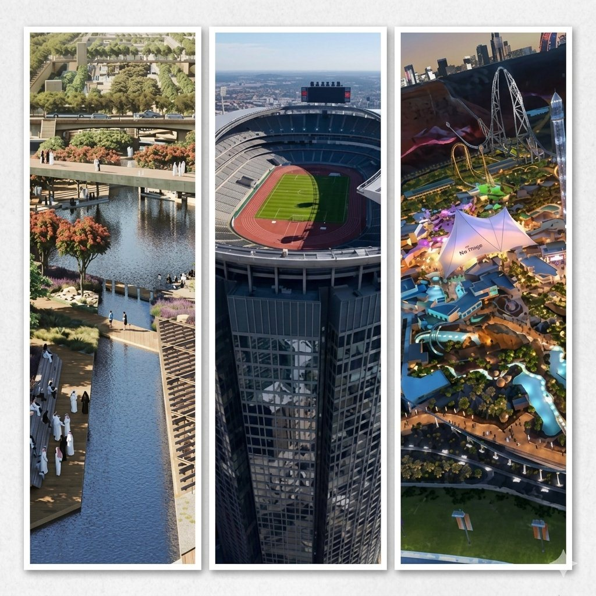
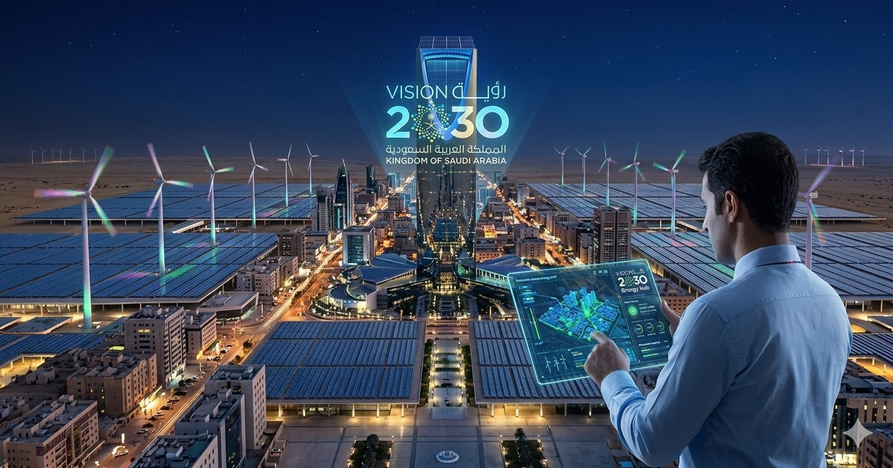
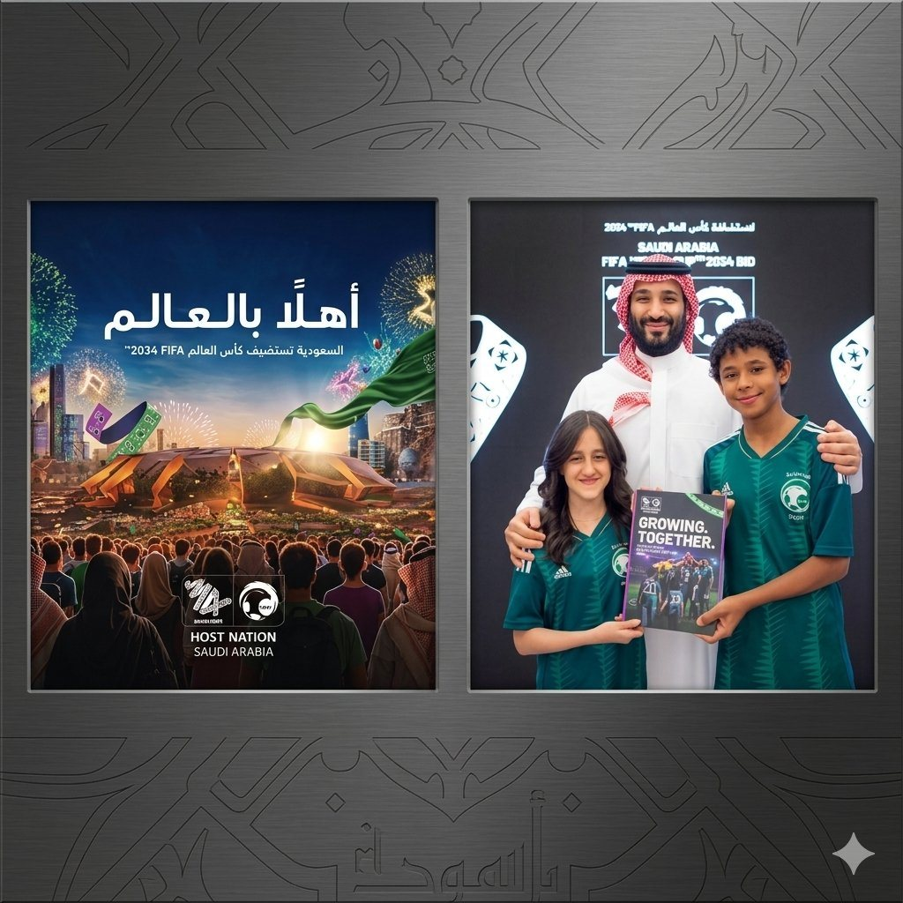
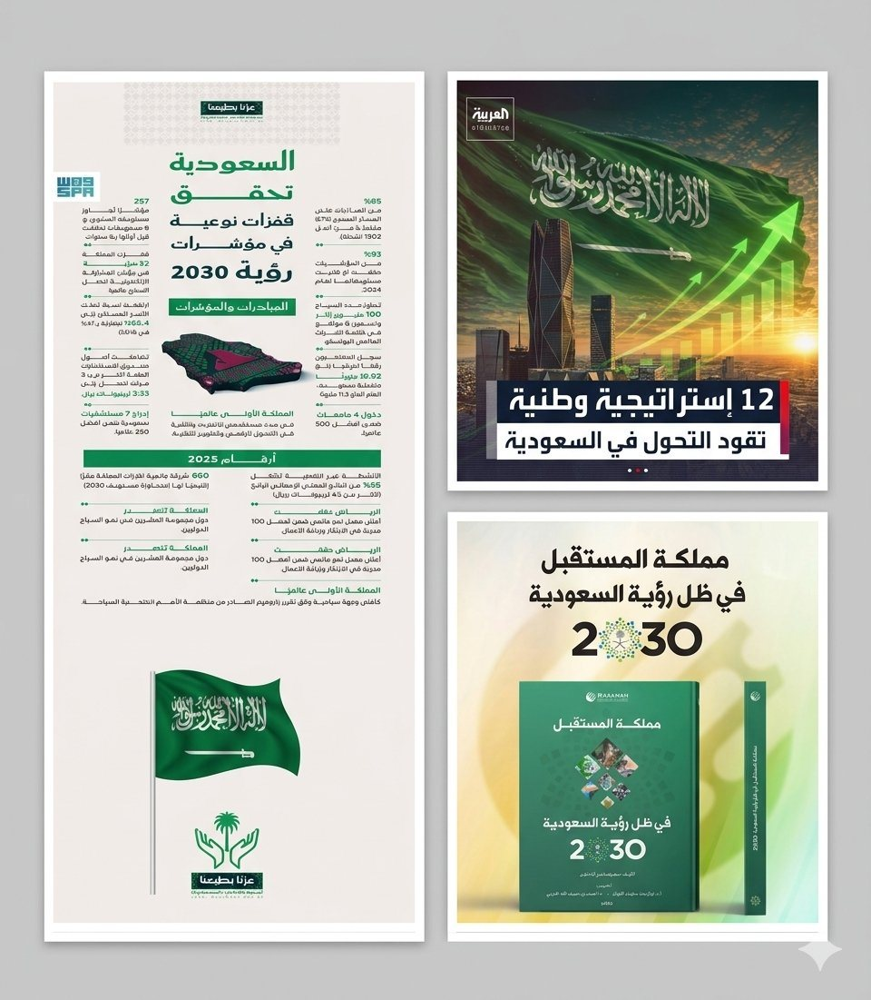
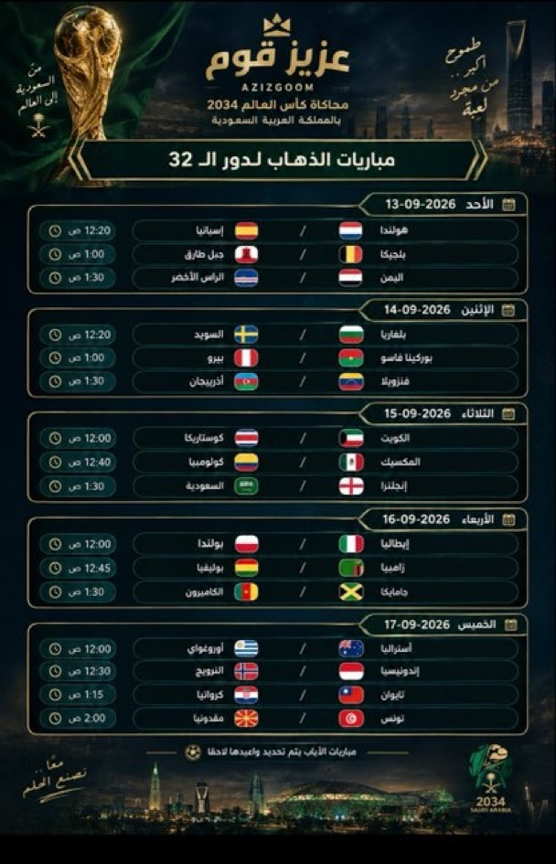
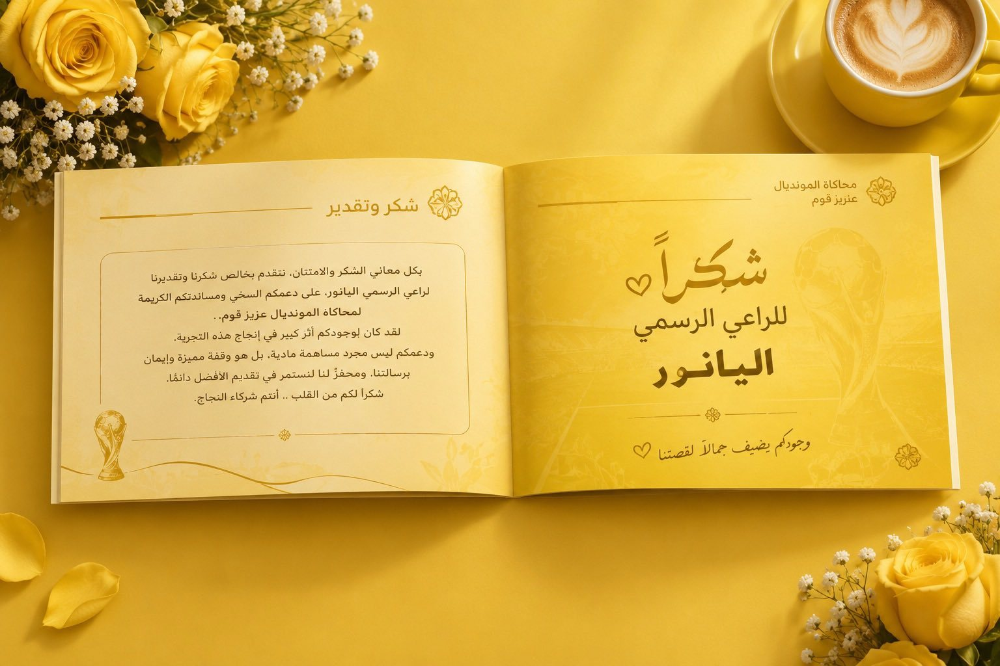
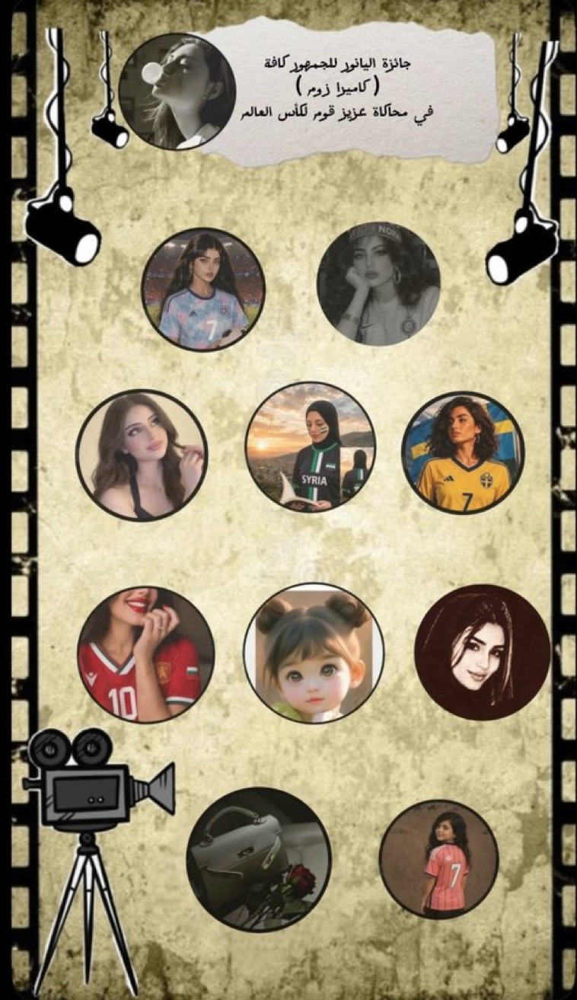

عيش أجواء المونديال
محاكاة تجربة كأس العالم بكل ما تحمله من منافسة وتفاعل وحضور جماهيري.
محاكاة المونديال... حين تصبح المنافسة رحلة معرفة واكتشاف
صاحب فكرة محاكاة كأس العالم 2034
 صاحب الفكرة
صاحب الفكرةبدأت فكرة المحاكاة مع عزيز قوم، الذي أراد أن يصنع تجربة تعيش أجواء المونديال على منصة إكس، وتتجاوز متابعة المباريات والنتائج إلى التفاعل، والمعرفة، وصناعة المحتوى.
ومن فكرة بدأت بتغريدة، تحولت المحاكاة إلى تجربة متكاملة شارك فيها 64 منتخبًا و320 مشاركًا، وامتدت لتجمع بين المنافسة والإبداع والاكتشاف.
وكانت الفكرة منذ بدايتها تحمل هدفًا أبعد من كرة القدم؛ أن تكون المحاكاة مساحة نتعرف من خلالها على العالم، ثم نعود إلى المملكة لنكتشفها، ونقترب أكثر من رؤيتها واستعداداتها لمونديال 2034.
أما تفاصيل الرحلة، وما بذله صاحب الفكرة واللجنة في تحويلها من فكرة إلى واقع، فله حكاية أخرى.
محاكاة تجربة كأس العالم بكل ما تحمله من منافسة وتفاعل وحضور جماهيري.
منح كل منتخب مساحة للتعريف ببلده وثقافته وهويته، في جولة سريعة حول العالم.
التعرّف على مناطق المملكة ومدنها وتراثها وثقافتها ومعالمها وتنوعها.
تعليم استخدام الذكاء الاصطناعي وتوظيفه في مختلف مجالات الحياة والعمل وصناعة المحتوى.
التعرّف على رؤية السعودية 2030، ومشاريعها المستقبلية، والاستعدادات لمونديال 2034.
تحويل البحث والتعلّم واكتساب المعرفة إلى جزء من تجربة المنافسة.
فتح المجال للمواهب لصناعة المحتوى والتصميم والفيديو والإعلام والحوار.
لم تكن المحاكاة مجرد مباريات ونتائج. مع كل مرحلة، كانت الرحلة تفتح بابًا جديدًا للمعرفة.
بدأت المنتخبات أولًا بالحديث عن بلدانها؛ عن هويتها وثقافتها وعاداتها وتفاصيلها، لتمنح المشاركين والجمهور جولة سريعة حول العالم.
ثم عاد الجميع إلى المعسكر في المملكة.
وهنا تغيّر اتجاه الرحلة؛ فأصبحت السعودية هي الوجهة، وبدأ البحث عن تفاصيلها من جديد.
من شمالها إلى جنوبها، ومن شرقها إلى غربها، بدأ المشاركون يتعرفون على المناطق والمدن والأسماء، وعلى حضارات المملكة وتراثها، وأطعمتها وملابسها وفنونها الشعبية وعاداتها وتقاليدها.
لم تكن السعودية مجرد مكان تستضيف فيه المحاكاة أحداثها؛ بل أصبحت جزءًا أساسيًا من القصة.

قاد البحث المشاركين إلى أماكن وتفاصيل قد لا يعرفها كثيرون حتى من داخل المملكة.
من المدن التاريخية والمواقع الأثرية، إلى الجبال والبحار والجزر والصحارى.
ومن الأسواق الشعبية والمأكولات المحلية، إلى الأزياء والفنون والعادات التي تختلف من منطقة إلى أخرى.
كانت كل معلومة تقود إلى معلومة أخرى، وكل منطقة تفتح بابًا لاكتشاف منطقة جديدة.
وبطريقة غير مباشرة، تحولت المحاكاة إلى دعوة للتعرف على المملكة، والتفكير في زيارتها، واكتشاف تنوعها الكبير.
اكتشفنا أن السعودية ليست وجهة واحدة... بل وجهات كثيرة داخل وطن واحد.

ومع استمرار الرحلة، لم يتوقف الاكتشاف عند السياحة والتراث.
بدأ المشاركون بالبحث عن تفاصيل أخرى؛ عن الخدمات، والتقنيات، والمشاريع، والمنظومات التي تعمل خلف المشهد.
أشياء نستخدمها يوميًا بسهولة، لكن خلف هذه السهولة منظومات ضخمة من التخطيط والعمل والتطوير.
بدأنا نرى ما وراء الخدمة التي تصل إلينا، وما وراء التقنية التي نستخدمها، وما وراء المشهد الذي يبدو بسيطًا في صورته النهائية.
وهنا ظهرت صورة مختلفة تمامًا:
حجم من العمل لم نكن نراه.

كلما ابتعدت الرحلة عن كرة القدم، كان عزيز قوم يعيد توجيهها نحو الهدف الأساسي.
رؤية السعودية 2030.
بدأ المشاركون بالتعرف على المشاريع والتحولات التي تشهدها المملكة، وكيف انعكست الرؤية على قطاعات مختلفة من الحياة.
من السياحة والثقافة والترفيه، إلى النقل والخدمات الرقمية والبنية التحتية، وصولًا إلى المشاريع الكبرى التي تعيد رسم مستقبل المملكة.
لم تعد رؤية 2030 مجرد شعار نقرأه، بل أصبحت مجموعة من المشاريع والتحولات التي يمكن البحث عنها، وفهم تفاصيلها، ورؤية أثرها.

ومع الحديث عن رؤية 2030، كان مونديال 2034 حاضرًا في المشهد.
بدأنا نتعرف على ما يجري خلف الاستضافة قبل أن تبدأ البطولة أصلًا؛ من الملاعب والمدن المستضيفة، إلى النقل والضيافة والبنية التحتية والخدمات والتقنيات.
لم ننتظر عام 2034 حتى نرى الصورة.
بدأنا نعيش الاستعدادات لها من الآن.
وأصبح السؤال أكبر من:
كيف ستقام البطولة؟
كيف تستعد دولة لاستضافة العالم؟

كان الذكاء الاصطناعي أحد الأبواب التي فتحتها المحاكاة أمام المشاركين.
لم يكن الهدف مجرد الحديث عن الذكاء الاصطناعي، بل تجربته وتعلّم استخدامه في صناعة المحتوى والتصميم والفيديو والبحث والعرض.
ومع الوقت، اكتشف المشاركون أن التقنية ليست مجالًا منفصلًا عن حياتهم؛ بل أداة يمكن توظيفها في التعليم والعمل والإبداع والإعلام ومختلف المجالات.
وهنا تحولت المحاكاة إلى مساحة للتجربة والتعلم، لا لمجرد مشاهدة ما يصنعه الآخرون.
من خلال البحث في المشاريع والخطط المستقبلية، لم نكتفِ بما هو موجود اليوم.
تعرفنا على مشاريع لم تكتمل بعد، وخطط يجري العمل عليها، وتفاصيل تجعل المستقبل أقرب إلى صورة يمكن تخيلها والحديث عنها وكأننا نعيشها.
رأينا كيف يرتبط التخطيط اليوم بما سيحدث غدًا، وكيف تحتاج المشاريع الكبرى إلى سنوات من العمل والاستعداد قبل أن تظهر للناس في صورتها النهائية.
لم نقرأ عن المستقبل فقط... حاولنا أن نراه من خلال تفاصيله.

كل منتخب حمل معه قصة بلده، فبدأت المحاكاة بجولة سريعة حول العالم قبل أن تعود الرحلة إلى المملكة.
 الكويت
الكويت بوركينا فاسو
بوركينا فاسو بلجيكا
بلجيكا الولايات المتحدة
الولايات المتحدةالجمهور أيضًا كان جزءًا من الرحلة.
حرصت المحاكاة على تعزيز الوعي والثقافة لدى الجماهير، من خلال ملخص خاص يتناول المملكة العربية السعودية من مختلف الجوانب، ويشمل:
كان يتم يوميًا اختيار عدد كبير من الجماهير عبر كاميرا الزوم، حيث يتم تصعيد من يضع قلبًا بأي لون إلى المايك، سواء كان متحدثًا أو مشاركًا بالإشارة.
بعد ذلك، تُطرح عليه أسئلة عفوية ومتنوعة تختلف عن أسئلة المنتخبات، وتركز على المملكة العربية السعودية ومشاريعها وإنجازاتها وأهدافها المستقبلية.
الهدف من هذا المحور: أن يكون لدى أكبر عدد ممكن من الجماهير وعي وثقافة شاملة عن المملكة العربية السعودية، والتعرف على تاريخها، وإنجازاتها، ومشاريعها، ودورها القادم في مختلف المجالات.
ويأتي هذا المحور ضمن توجه البطولة للجمع بين المنافسة الرياضية والمعرفة والثقافة، وإثراء تجربة الجماهير بالمعلومات المفيدة.
واستمرت كاميرا الزوم المقدمة باسم الراعي الرسمي للبطولة إليانور مع الجماهير حتى نهاية البطولة.

تفاصيل أكثر عن الشخص الذي بدأت منه الفكرة، وعن الدور الذي حافظ على اتجاه الرحلة ومعناها.
وراء هذه الرحلة كانت هناك فكرة بدأت من شخص واحد، ثم كبرت مع الوقت حتى أصبحت تجربة شارك فيها عشرات الفرق ومئات المشاركين.
لم يتعامل عزيز قوم مع المحاكاة باعتبارها مجرد مباريات افتراضية، بل كان يرى فيها مساحة يمكن أن تجمع بين المنافسة والمحتوى والمعرفة.
ومع اتساع التجربة، اتسعت معها الفكرة.
كان يحرص على أن تبقى المحاكاة مرتبطة بهدفها الأساسي، وكلما اتجهت الرحلة إلى موضوع بعيد عن جوهرها، أعاد توجيهها نحو ما يخدم الفكرة؛ نحو السعودية، ورؤية 2030، والاستعدادات لمونديال 2034، وما يحدث خلف المشهد.
لم يكن دوره يقتصر على إطلاق الفكرة.
كان حاضرًا في تفاصيلها، يتابع مسارها، ويوجهها، ويعيد ضبط بوصلتها كلما احتاج الأمر.
ومن هنا تحولت الفكرة من مجرد محاكاة للمونديال إلى رحلة اكتشاف ومعرفة وصناعة محتوى.
من تغريدة إلى تجربة.
الفكرة بدأت ببداية بسيطة، لكنها كبرت مع تفاعل المشاركين، حتى أصبحت محاكاة تضم 64 منتخبًا و320 مشاركًا، ولكل منتخب هويته ومحتواه وحضوره.
العالم أولًا… ثم المملكة.
أعطت المحاكاة المنتخبات فرصة للحديث عن بلدانها وثقافاتها، لتتحول الرحلة إلى جولة حول العالم، قبل أن تعود جميع الخيوط إلى المملكة.
البوصلة كانت واضحة.
كان الهدف أن تظل المعرفة مرتبطة برؤية السعودية 2030، ومشاريعها، والاستعدادات لمونديال 2034، وأن نكتشف حجم العمل الذي يحدث خلف الخدمات والمشاريع التي نراها اليوم.
وهنا ظهر دور صاحب الفكرة.
لم يكن دوره إطلاق المحاكاة فقط، بل المحافظة على اتجاهها، وربط تفاصيلها بالهدف الأكبر، حتى لا تتحول المنافسة إلى غاية منفصلة عن المعرفة والاكتشاف.
رحلة شارك فيها 64 منتخبًا و320 مشاركًا، ولكل منهم دور في صناعة صورة أكبر من مجرد المنافسة.
فكرة بدأت بتغريدة... وانتهت بتجربة تركت أثرًا يتجاوز المباراة.


لم تكن الفكرة لتصل إلى هذه الصورة دون أشخاص حملوا تفاصيلها معهم، وعملوا خلف المشهد حتى تستمر المنافسات بالشكل المعتمد.

كان حمادة حلقة الوصل المباشرة بين اللجنة والفرق والمشاركين؛ يتابع استفساراتهم وملاحظاتهم، وينقلها إلى رئيس اللجنة، ويحرص على بقاء التواصل منظمًا وواضحًا طوال الرحلة.
تولى التنسيق بين الفرق وتحديد مواعيد المباريات، وإعداد جدول المنافسات وتنظيمه وتحديثه، إلى جانب مسؤولية المسابقات ومراحلها ومتابعة آليتها. كما تابع التزام الفرق بالمواعيد والتعليمات، ونسّق باستمرار مع بقية أعضاء اللجنة لضمان سير المنافسات بالصورة المعتمدة.
دورٌ يعتمد على المتابعة المستمرة، ودقة التنظيم، وسرعة التعامل مع تفاصيل تتغير مع سير المنافسات، حتى تبقى الرحلة منضبطة من مباراة إلى أخرى.

في قلب الاستعداد لكل مباراة، كانت الريم حاضرة لمتابعة التفاصيل التي تسبق المنافسة وترافقها؛ من إعداد وتجهيز كشوفات أسماء اللاعبين قبل بداية المباراة، إلى التأكد من جاهزية الفرق واللاعبين.
ومع انطلاق المنافسة، تولّت متابعة سير المباراة ومراقبته، ورصد أي ملاحظات أو مخالفات قد تظهر أثناء المنافسة، ورفعها إلى رئيس اللجنة عند الحاجة.
عملٌ ميداني يقوم على الحضور والانتباه للتفاصيل، وعلى أن تكون كل مباراة مستعدة للانطلاق، وأن تسير وفق ما هو معتمد.

لم تقتصر المتابعة على ما يحدث أثناء المباراة، بل بدأت من لحظات الاستعداد لها؛ حيث تولّت الشموخ تجهيز كشوفات أسماء اللاعبين والتأكد من جاهزية الفرق واللاعبين قبل انطلاق المنافسة.
ومع بداية المباراة، واصلت متابعة سيرها ومراقبتها، مع رصد أي ملاحظات أو مخالفات تظهر خلال المنافسة، ورفع ما يستدعي المتابعة إلى رئيس اللجنة عند الحاجة.
مسؤولية تتطلب حضورًا دقيقًا ومتابعة متواصلة، لأن انتظام المنافسة يبدأ من التفاصيل الصغيرة التي تُنجز قبل صافرة البداية وتستمر حتى نهايتها.

خلف كل مباراة كانت هناك مهمة أخرى لا تقل أهمية عن المنافسة نفسها: أن تُوثّق، وتُرتّب، وتصل تفاصيلها إلى الجمهور بصورة تليق بالبطولة.
تولت أم ورد إعداد تقارير المباريات ونتائجها، وتوثيق إحصائيات وأحداث كل مباراة، ثم تحويل هذه التفاصيل إلى محتوى مصمم للنتائج والإحصائيات، ونشر التقارير والنتائج عبر حساب البطولة.
ولم يتوقف دورها عند التوثيق والنشر؛ بل تولّت كذلك الإلقاء والتقديم في ختام المباريات والبطولات، لتكون حاضرة في نقل ختام كل مرحلة وإبراز ما شهدته الرحلة من منافسات ونتائج.
64 منتخبًا من مختلف أنحاء العالم، اجتمعوا في محاكاة واحدة، ولكل منتخب هويته وحضوره وقصته.
بدأت الرحلة بالتعريف بالبلدان وثقافاتها، ثم انتقلت المنتخبات إلى المملكة لتعيش تجربة الاستضافة وتكتشف مدنها وتفاصيلها.
64 منتخبًا… رحلة واحدة، ووجهة واحدة: المملكة.

الراعي الرسمي
لا يكتمل المشهد إلا بمن يدرك قيمة اللحظة..
لم تكن إليانور مجرد راعٍ رسمي، بل كانت الروح التي أضاءت زوايا المدرجات، واللمسة التي حوّلت هتاف الجماهير إلى ذكريات محفورة في القلب 🏆✨
هداياك لم تكن مجرد تفاصيل عابرة، بل رسائل تقدير وصلت لأرواح المشجعين قبل أيديهم، لتثبتي أن الشراكة الحقيقية هي التي تزرع الفرح وتخلّد اللحظة 🎁💚
شكرًا إليانور، لأنك اخترتِ أن تكوني شريكة النبض، وصانعة البهجة في البطولة الاستثنائية.


رحلة بدأت بفكرة، وامتدت إلى العالم، ثم عادت إلى المملكة.